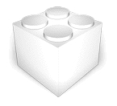

DICOM PrintView
Full preview of the Window and Series layout before you send it to print. Arrange, zoom, adjust window and level, and select ranges and intervals between images. Never waste another printed film again.
$19.99
Get access